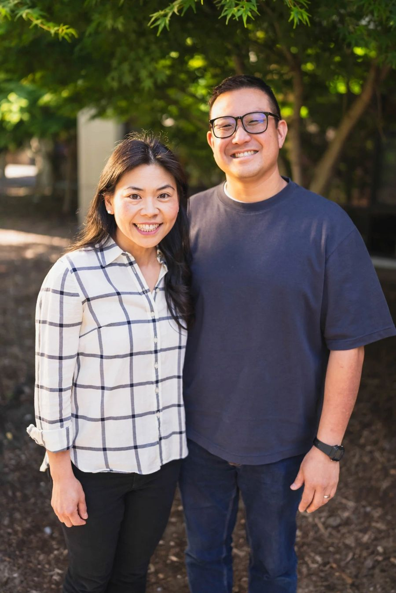
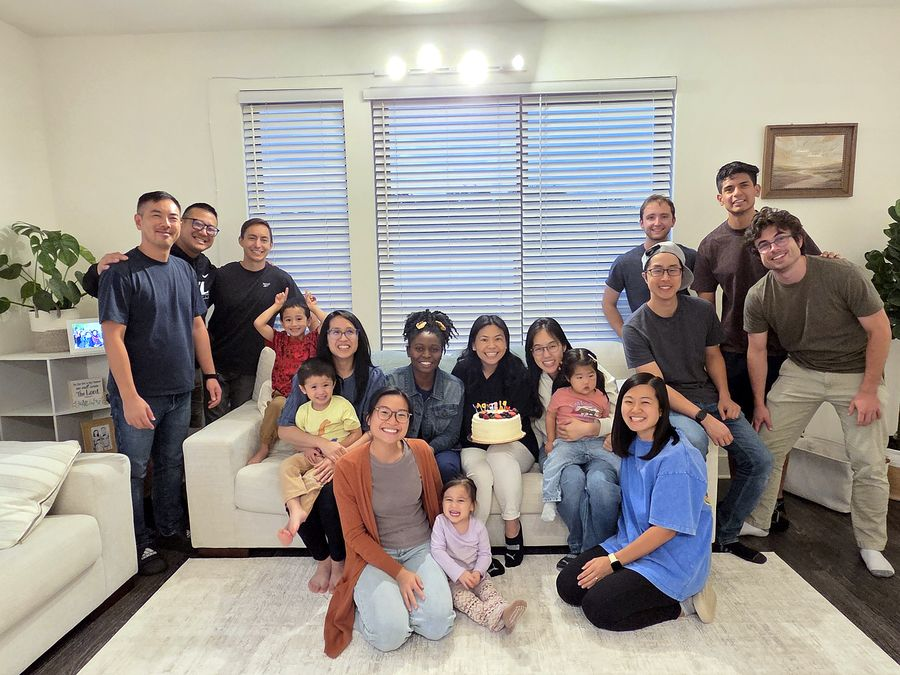

leadership and team
our pastor couple
Our campus pastor Ben, and his wife, Helen, have served in our church network for 25 years. They recently moved to North Carolina with a heart for college students to encounter Jesus and grow in their faith.

a few questions for Ben + Helen
As a kid, I loved rocking out to synthesizer-heavy kids’ praise music (hey, don’t knock it til you try it!).
But by 12th grade I started to get disillusioned—church seemed the same-old, drama-filled, popularity-driven arena as high school, just replace the Boyz II Men soundtrack with Michael W Smith.
In college I discovered a group of folks who lived Christian community in a way that displayed God’s love to one another, and helped lost people truly discover Jesus. Through them I also discovered afresh the God who forgives me through the cross, and committed to follow Jesus as my Lord and Savior in 1998.
He calls me not to a solo, externally moral life but to a community living on mission to share the Gospel.
And that’s been my privilege over the years, from college to youth students, from Tokyo to Central Asia and now in North Carolina, to share this good news of God and the beauty of his way of life.
Growing up, I was your classic goodie-two-shoes. I hardly ever fought with my sister, involved in ASB, Key Club, school sports, and did everything to keep up a polished image. I also grew up going to church, but it wasn’t until my junior year at UC Berkeley that I made the decision to become a Christian and follow Jesus.
God opened my eyes to see past the image I worked so hard to maintain. I realized that beneath it all, I was a sinner who desperately needed more than just good grades or people’s approval—I needed forgiveness. I finally understood that salvation happens when I stop following myself and surrender to Jesus as the rightful Lord of my life.
I’ve had the joy and privilege of bringing the gospel to life through building Acts2 community near college towns, first in Berkeley and then in Irvine. I marvel at how God saved me—and how He continues to use ordinary people like me in His extraordinary mission of saving souls.
In 2008, I decided to quit my job as a Senior Recruiter and work for our church full-time. It’s a decision I’ve never regretted. It’s been a blessing to serve behind the scenes and witness firsthand the amazing ways God is working and building up His church.
Over the years, Ben and I served in both college and youth ministries. Since our first experience with youth ministry in 2014, I’ve felt a deep burden for the next generation—especially because I remember how much I needed mentors when I was a teen. Now, I get to walk alongside young people, pointing them to Jesus and helping them grow in confidence and passion for God.
“…The Lord paid attention and heard them, and a book of remembrance was written before him of those who feared the Lord and esteemed his name.”Malachi 3:16
This verse reminds me that even when fruit isn't visible, God sees every act of love and faithfulness. That keeps me going.
our mentors
co-vocational, and all in.
Our mentors serve co-vocationally, which means that we pursue our professions while also serving in ministry. We're product developers, engineers, dentists, financial analysts - and above all, followers of Jesus who care about college students.
For many of us, our college years were more than a season of classes and basketball games - they were a defining chapter in our spiritual journeys. Our heart is to see more college students encounter Jesus, grow in authentic community, and live out their faith in everyday life. We enjoy walking alongside them and creating a space where they can explore Christianity, build lasting friendships, and be equipped to become the next generation of kingdom workers.
